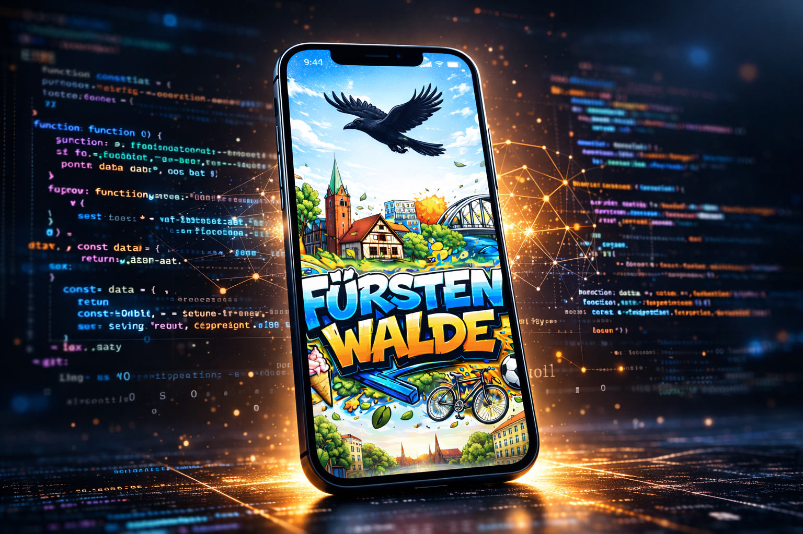
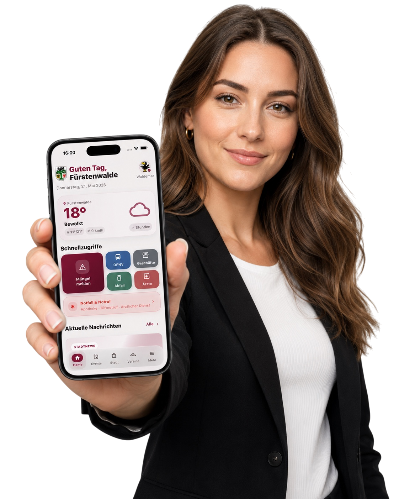
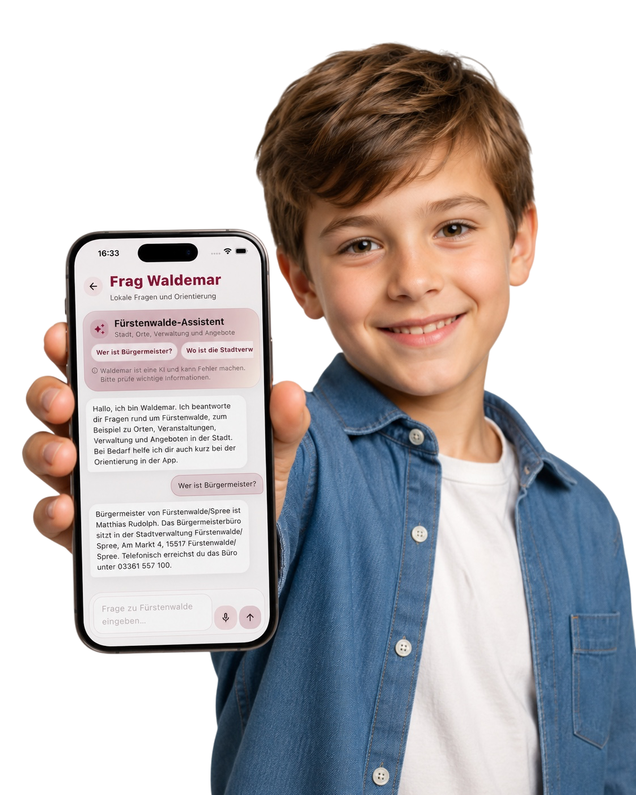

Stadt & Verwaltung
Mängel melden, Termine buchen, Kontakte finden, Öffnungszeiten prüfen und Amtsblätter lesen.

Fürstenwalde digital erleben
Stadtleben, Bürgerservice, Veranstaltungen, Vereine, lokale Angebote und Community-Funktionen in einer modernen App für Fürstenwalde. Der offizielle Release ist am 3. Juli 2026 auf dem Stadtfest.
Produktkern
Die Fürstenwalde App ist der digitale Begleiter für die Domstadt an der Spree. Sie verbindet offizielle Informationen, lokale Services und echte Community-Funktionen an einem Ort. Nutzerinnen und Nutzer finden schnell, was gerade wichtig ist, können mitmachen, Angebote entdecken und Fürstenwalde im Alltag einfacher organisieren.
Warum diese App
Lokale Informationen sind oft verteilt: auf Webseiten, in sozialen Netzwerken, in Aushängen, Amtsblättern, Vereinsgruppen, einzelnen Portalen und persönlichen Chats. Das funktioniert irgendwie, kostet im Alltag aber Zeit. Die Fürstenwalde App bündelt diese Wege in einer Oberfläche, die für den täglichen Gebrauch gebaut ist.
Sie soll nicht nur informieren, sondern verbinden: Bürgerinnen und Bürger mit der Verwaltung, Vereine mit neuen Mitgliedern, Unternehmen mit Menschen vor Ort, Veranstalter mit Publikum und Nachbarn mit Nachbarn. So entsteht eine digitale Infrastruktur, die Fürstenwalde sichtbarer, zugänglicher und gemeinschaftlicher macht.
App herunterladen
Die Fürstenwalde App erscheint am 3. Juli 2026 für iPhone und Android. Trag deine E-Mail ein und du bekommst eine kurze Nachricht, sobald die App verfügbar ist.
App in Aktion
Die Startseite bündelt Wetter, Nachrichten, Termine, Schnellzugriffe, Anzeigen, Marktplatz und Nachbarschaftshilfe. Von dort aus führt die App in Verwaltung, Vereine, Mobilität, Angebote und Beteiligung.
Der Aufbau folgt dem Alltag: morgens kurz Wetter und Nachrichten prüfen, später einen Termin finden, am Wochenende Veranstaltungen entdecken, zwischendurch ein Angebot teilen oder im Verein aktiv bleiben.

Was die App leistet
Mängel melden, Termine buchen, Kontakte finden, Öffnungszeiten prüfen und Amtsblätter lesen.
Lokale Nachrichten, Termine und wichtige Hinweise übersichtlich auf der Startseite und in Detailansichten.
Vereine, Teams, Gruppen, private Nachrichten und digitale Räume für lokales Engagement.
Lokale Geschäfte, Fürstenwalde Gutschein, Deals, Werbeflächen und Kampagnen für regionale Sichtbarkeit.
Kaufen, verkaufen, verleihen, Hilfe anbieten, Hilfe finden und verlorene Dinge wieder zusammenbringen.
ÖPNV, Abfallkalender, Ärzte, Notdienste, Tourismus, Stadtgeschichte und der lokale Assistent Waldemar.
Für wen
Schnell wissen, was los ist, Verwaltungskontakte finden, Hilfsangebote entdecken, Dinge teilen und im Stadtleben leichter den Überblick behalten.
Angebote, Teams und Neuigkeiten sichtbar machen, Mitglieder erreichen und lokale Gemeinschaft digital organisieren.
Lokale Reichweite aufbauen, Aktionen platzieren, beim Fürstenwalde Gutschein sichtbar werden und Menschen direkt vor Ort erreichen.
Sehenswürdigkeiten, Tourismusinformationen, Veranstaltungen, Mobilität und praktische Anlaufstellen kompakt auf dem Smartphone finden.
Frag Waldemar
Waldemar beantwortet Fragen zu Stadtleben, Veranstaltungen, Verwaltung, Mobilität, Orten, Geschäften, Dienstleistungen, Vereinen und zur Orientierung in der App.
Die Idee dahinter: Wer eine schnelle lokale Antwort sucht, soll nicht erst wissen müssen, in welchem Bereich der App oder auf welcher Website die Information liegt. Waldemar hilft beim Einstieg und bleibt dabei bewusst auf Fürstenwalde fokussiert.

Fürstenwalde zuerst
Lokale Sichtbarkeit
Unternehmen, Vereine und Veranstalter können Platzierungen in der App anfragen: Banner, lokale Deals und native Platzierungen für Menschen direkt vor Ort.
Werbung wird dabei nicht als Fremdkörper gedacht, sondern als Teil des lokalen Nutzens: Angebote aus Handel, Gastronomie, Freizeit, Kultur, Dienstleistungen und Vereinsleben erscheinen dort, wo sie für Fürstenwalde relevant sind.
Das Team
Kontakt
Hilfe & Support
Diese Fragen und Antworten stammen aus dem Hilfe-Bereich der Fürstenwalde App und geben einen schnellen Überblick für den Start.
Im Bereich „Home“ findest du Schnellzugriff, Wetter, aktuelle Nachrichten und je nach Bereich Hinweise auf neue Inhalte.
Diese Hinweise zeigen neue oder noch nicht gelesene Inhalte, zum Beispiel bei „Mängel melden“, Nachrichten oder Chats.
Unten wechselst du zwischen „Home“, „Events“, „Stadt“, „Vereine“ und „Mehr“. In „Home“ kommst du zusätzlich über den Schnellzugriff direkt zu „Mängel melden“, „ÖPNV“, „Abfallkalender“ und „Notfall“.
Öffne „Mängel melden“ über den Schnellzugriff oder den Verwaltungsbereich, wähle die passende Kategorie und beschreibe den Fall. Du kannst dafür auch direkt deinen aktuellen GPS-Standort und Bilder verwenden.
Städtische Nachrichten findest du auf „Home“ im Bereich „Aktuelle Nachrichten“ und im Nachrichtenbereich selbst. Dort erscheinen Pressemitteilungen und offizielle Hinweise.
„Lokaler Marktplatz“ ist für Kaufen und Verkaufen. „Nachbarschaftshilfe“ ist für Hilfe anbieten oder Hilfe suchen. „Gruppen“ sind für Austausch, Beiträge und Gemeinschaft zu Themen, Stadtteilen oder Interessen.
In „Gruppen“ siehst du Beiträge und Diskussionen. Unter „Nachrichten“ schreibst du privat mit anderen Nutzern, zum Beispiel nach einer Kontaktaufnahme aus „Lokaler Marktplatz“, „Nachbarschaftshilfe“ oder einer Gruppe.
Im Bereich „Events“ findest du kommende Veranstaltungen und Termine. Dort siehst du sowohl städtische Hinweise als auch eingetragene Events.
Unter „Stadt“ liegen stadtnahe Inhalte und Verwaltungsbezüge. Unter „Mehr“ findest du zusätzliche Funktionen, Einstellungen, Profil, Rechtliches und weitere App-Bereiche aus dem Menü.
Dein Profil erreichst du über „Mehr“. Dort kannst du dein Bild, deinen Namen und weitere persönliche Angaben anpassen.
Die Einstellung für Push-Mitteilungen findest du in deinem Profil beziehungsweise in den Einstellungen unter „Mehr“. Die Zahl auf dem App-Icon funktioniert nur, wenn Mitteilungen auf dem Gerät erlaubt sind.
Dein Profil wird für Beiträge, Nachrichten, Gruppen und andere Community-Funktionen genutzt. Dort steuerst du auch wichtige Konto- und Benachrichtigungseinstellungen.
Öffne den Bereich zuerst neu oder nutze den eingebauten Aktualisieren-Button, falls vorhanden. Wenn das nicht hilft, prüfe deine Internetverbindung und starte die App erneut.
Manche Bereiche laden Inhalte beim Öffnen oder beim Zurückkehren in die App neu. Wenn du sofort den neuesten Stand brauchst, kannst du in einzelnen Bereichen zusätzlich manuell aktualisieren.
Für Fragen an die Stadtverwaltung gibt es den separaten Bereich „Frag die Verwaltung“. „Hilfe & Support“ ist nur für Fragen zur Nutzung der App gedacht.
Wenn dir in der App etwas auffällt oder eine Funktion unklar ist, gehört das in „Hilfe & Support“ oder in den vorgesehenen Feedback-Bereich. Anliegen an die Stadt selbst gehören dort nicht hinein.